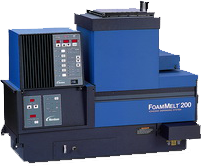

Principio de Funcionamento
O sistema é composto por um coleiro, um gerador de nitrogênio, manifold e por um conjunto de mangueiras. O nitrogênio, por sua vez, é retirado do ar comprimido da fábrica. Passando pelos filtros do gerador de nitrogênio. Para produzir espuma, o sistema usa a recirculação de forma contínua do adesivo com o gás nitrogênio. Não necessitando do Booster de nitrogênio. Por usar este processo de recirculação, o sistema FoamMelt tende a ser mais constante e sua capacidade de fornecimento é bem maior.
Dados Técnicos
- Rotação: 300 rpm - 900 rpm
- Pressão máx: 90 bar (1300 psi)
- Temperatura de controle: 38 - 204 °C
Capacidade
- Bomba padrão: 25 kg/hr
- Bomba de alta saída: 34 kg/hr
- Tanque: 31 kg
- Canais elétricos: 6
- Canais hidráulicos: 4
Principais Falhas e Soluções
| RTD | uT | oT | 2 | |
|---|---|---|---|---|
| Definição da falha | Falha de leitura | Baixa temperatura | Sobretemperatura | Os parafusos da placa de potência estão soltos, causando uma conexão de aterramento falha. |
| Solução | Verificar as condições do sensor de temperatura | Verifica integridade das extensões e cordset | Verifica integridade das extensões e cordset | Apertar os parafusos da placa de potência |
Descrição do painel